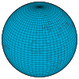

longitude
property

Source: Wikipedia
Wikipedia Page (Something wrong with this association? Let us know.)
Wikidata Page (Something wrong with this association? Let us know.)
Occurs in:
- drainage-basin_centroid__longitude
- drainage-basin_outlet_river-bank~left__longitude
- drainage-basin_outlet_river-bank~right__longitude
- drainage-basin_outlet_center__longitude
- channel_entrance_center__longitude
- channel_exit_center__longitude
- river-delta_apex__longitude
- river-delta_channel~main_entrance_center__longitude
- river-delta_distributary_outlet_center__longitude
- river-delta_distributary_outlet_side~left__longitude
- river-delta_distributary_outlet_side~right__longitude
- river-delta_shoreline__longitude
- earth_interior_earthquake_hypocenter__longitude
- earth_magnetic-north-pole__longitude
- earth_magnetic-south-pole__longitude
- earth_surface_earthquake_epicenter__longitude
- earth_surface_seismic-station__longitude
- earth_surface_viewpoint__longitude
- earthquake_hypocenter__longitude
- glacier-terminus_side~left__longitude
- glacier-terminus_side~right__longitude
- land_surface__longitude
- model_grid_cell_center__longitude
- model_grid_cell_centroid__longitude
- model_grid_cell_edge~east__longitude
- model_grid_cell_edge~west__longitude
- model_grid_edge~east__longitude
- model_grid_edge~west__longitude
- projectile_trajectory_origin__longitude
- projectile_trajectory_target__longitude
- sea_bottom_surface__longitude
- sea_surface__longitude
- sea_surface_water_tide_constituent-2mk3_amphidromic-points__longitude
- earth_interior_earthquake_focus__longitude
- model_grid_cell_edge_center__longitude
- model_grid_cell_face_centroid__longitude
- model_grid_node__longitude
- model_grid_dual-cell_centroid__longitude
- model_grid_dual-cell_edge_center__longitude
- model_grid_dual-cell_face_centroid__longitude
- model_grid_dual-node__longitude
- model_grid_primary-cell_centroid__longitude
- model_grid_primary-cell_edge_center__longitude
- model_grid_primary-cell_face_centroid__longitude
- model_grid_primary-node__longitude
- model_grid_virtual-north-pole__longitude
- field__longitude
- weather-station__longitude